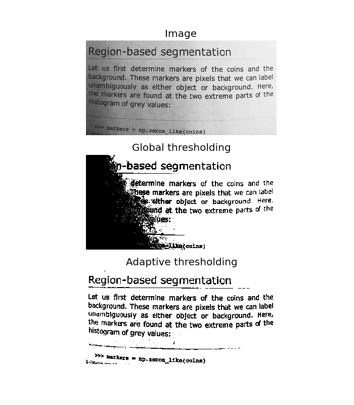

Adaptive Thresholding¶
Thresholding is the simplest way to segment objects from a background. If that background is relatively uniform, then you can use a global threshold value to binarize the image by pixel-intensity. If there’s large variation in the background intensity, however, adaptive thresholding (a.k.a. local or dynamic thresholding) may produce better results.
Here, we binarize an image using the threshold_adaptive function, which calculates thresholds in regions of size block_size surrounding each pixel (i.e. local neighborhoods). Each threshold value is the weighted mean of the local neighborhood minus an offset value.
import matplotlib.pyplot as plt
from skimage import data
from skimage.filter import threshold_otsu, threshold_adaptive
image = data.page()
global_thresh = threshold_otsu(image)
binary_global = image > global_thresh
block_size = 40
binary_adaptive = threshold_adaptive(image, block_size, offset=10)
fig, axes = plt.subplots(nrows=3, figsize=(7, 8))
ax0, ax1, ax2 = axes
plt.gray()
ax0.imshow(image)
ax0.set_title('Image')
ax1.imshow(binary_global)
ax1.set_title('Global thresholding')
ax2.imshow(binary_adaptive)
ax2.set_title('Adaptive thresholding')
for ax in axes:
ax.axis('off')
plt.show()
Python source code: download (generated using skimage 0.7.0)